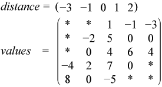

Intel® oneAPI Math Kernel Library Developer Reference - Fortran
If the sparse matrix has diagonals containing only zero elements, then the diagonal storage format can be used to reduce the amount of information needed to locate the non-zero elements. This storage format is particularly useful in many applications where the matrix arises from a finite element or finite difference discretization. The Intel® oneAPI Math Kernel Library diagonal storage format is specified by two arrays:values and distance, and two parameters: ndiag, which is the number of non-empty diagonals, and lval, which is the declared leading dimension in the calling (sub)programs. The following table describes the arrays values and distance:
A real or complex two-dimensional array is dimensioned as lval by ndiag. Each column of it contains the non-zero elements of certain diagonal of A. The key point of the storage is that each element in values retains the row number of the original matrix. To achieve this diagonals in the lower triangular part of the matrix are padded from the top, and those in the upper triangular part are padded from the bottom. Note that the value of distance(i) is the number of elements to be padded for diagonal i.
An integer array with dimension ndiag. Element i of the array distance is the distance between i-diagonal and the main diagonal. The distance is positive if the diagonal is above the main diagonal, and negative if the diagonal is below the main diagonal. The main diagonal has a distance equal to zero.
The above matrix C can be represented in the diagonal storage format as follows:

where the asterisks denote padded elements.
When storing symmetric, Hermitian, or skew-symmetric matrices, it is necessary to store only the upper or the lower triangular part of the matrix.
For the Intel® oneAPI Math Kernel Library triangular solver routines elements of the arraydistance must be sorted in increasing order. In all other cases the diagonals and distances can be stored in arbitrary order.